Kenzie's MixTape
For the Hard Days.
- 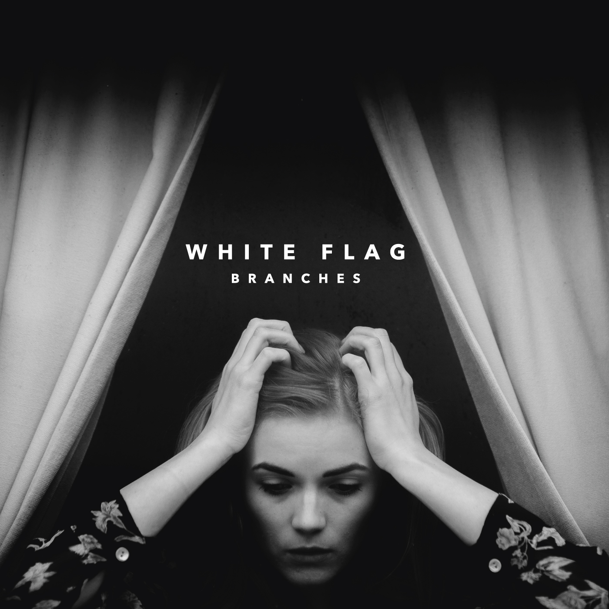Carry - Branches
- 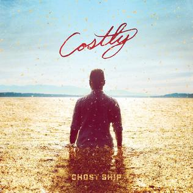The Revelation of Jesus Christ - Ghost Ship
- 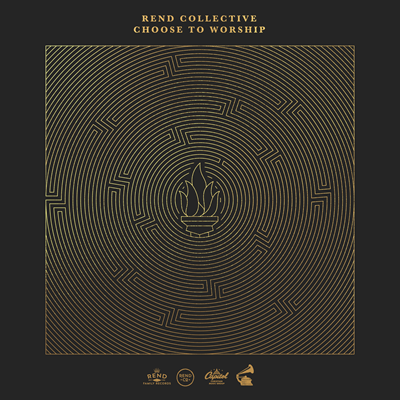DEFIANT - Rend Collective
- 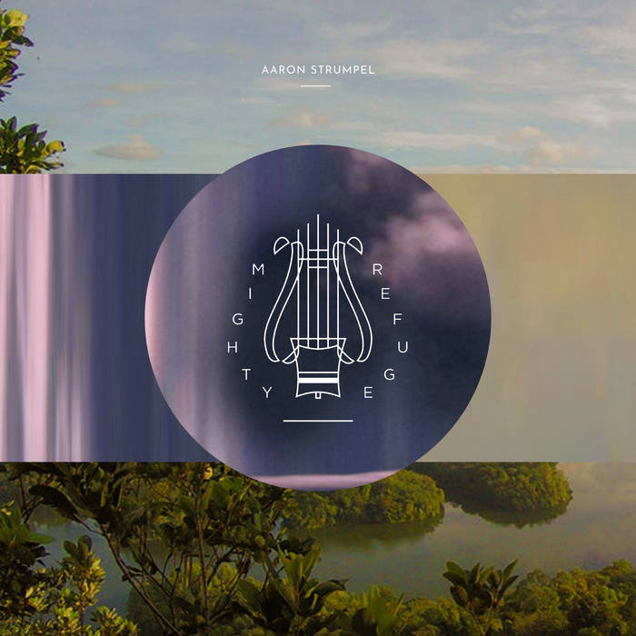Spark My Heart - Aaron Strumpel
- 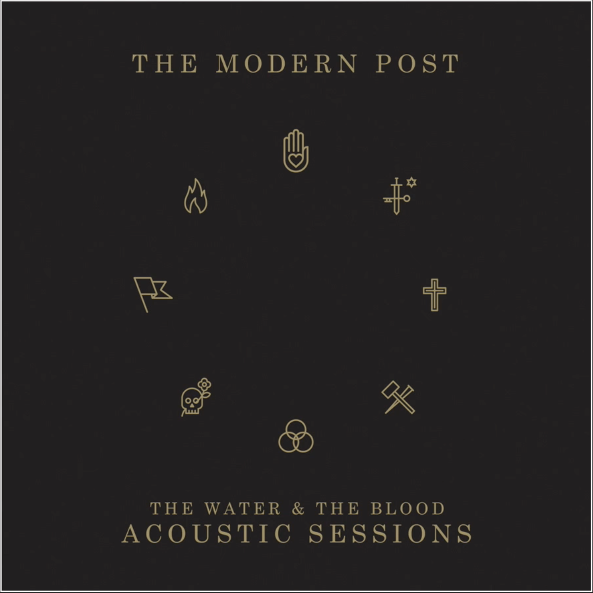Grace Alone - The Modern Post
Carry - Lyrics: I'm Feeling Like Moses and my arms are getting heavy
Brother, would you come and lift them up for me?
The Revelation of Jesus Chirst - Lyrics: I saw a new heaven and a new
eart, for the first had passed away
DEFIANT - Lyrics: I will not go quietly, I will not go silently,
into the night, let praises rise.
Spark My Heart - Lyrics: Through dangers toils and snares
I run to You my God, oh brilliant Son
When all seems lost, prone to dismay
You hold me fast, You still my sway
Grace Alone - Lyrics: I was an orphan lost at the fall;
Running away when I'd hear you call,
But Father, you worked your will.
Oh, For the Love.
- 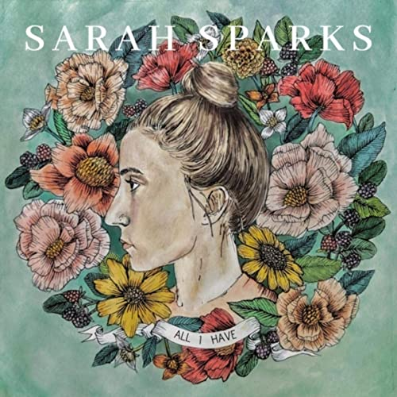I'll Hold You Lightly - Sarah Sparks
- 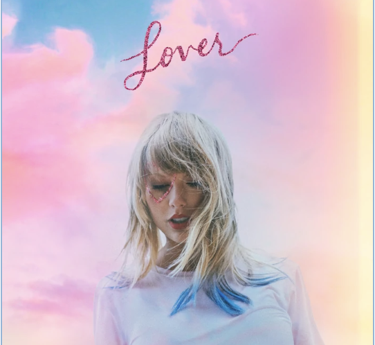Paper Rings - Taylor Swift
- 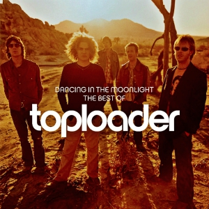Dancing in the Moonlight - Toploader
- 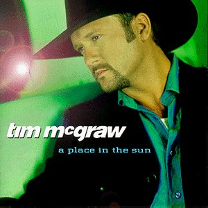My Best Friend - Tim McGraw
- 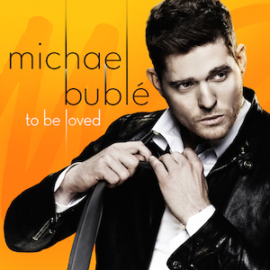To Love Somebody - Michael Buble
I'll Hold You Lightly - Lyrics:
I'll hold you lightly my darling
I'll hold you lightly my dear
And though my arms love to hold you
My heart has God above to fear
Paper Rings - Lyrics:
The moon is high
Like your friends were the night that we first met
Went home and tried to stalk you on the internet
Now I've read all of the books beside your bed
Dancing in the Moonlight - Lyrics:
We get it on most every night
And when that ol' moon gets so big and bright
It's a supernatural delight
Everybody was dancing in the moonlight
My Best Friend - Lyrics:
I never had no one, that I could count on,
I've been let down so many times
And I was tired of hurtin', so tired of searchin'
Till you walked into my life
It was a feeling, I'd never known
And for the first time, I didn't feel alone
To Love Somebody - Lyrics:
There's a light
A certain kind of light
That never shone on me
I want my life to be
Lived with you
Lived with you
FUN.
 Ride - Twenty One Pilots
Ride - Twenty One Pilots ME! - Taylor Swift
ME! - Taylor Swift- 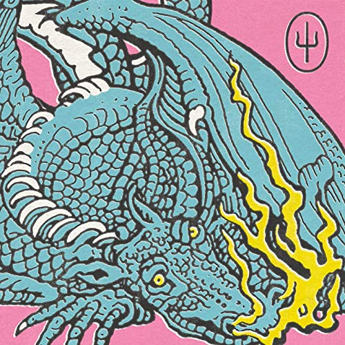Mulberry Street - Twenty One Pilots
 Shake it Off - Taylor Swift
Shake it Off - Taylor Swift- Saturday - Twenty One Pilots
Ride - Lyrics:
I just wanna stay in the sun where I find
I know it's hard sometimes
Pieces of peace in the sun's peace of mind
I know it's hard sometimes
Yeah, I think about the end just way too much
But it's fun to fantasize
On my enemies who wouldn't wish who I was
But it's fun to fantasize
ME! - Lyrics:
I promise that you'll never find another like me
I know that I'm a handful, baby, uh
I know I never think before I jump
And you're the kind of guy the ladies want
(And there's a lot of cool chicks out there)
I know that I went psycho on the phone
I never leave well enough alone
And trouble's gonna follow where I go
(And there's a lot of cool chicks out there)
Mulberry Street - Lyrics:
One, two, three, yeah
Ah, ah
Keep your bliss, there's nothing wrong with this, no (Wrong with this, no)
Ah-ah-ah-ah, yeah, whoo-ooh
Keep your bliss, there's nothing wrong with this, no (Wrong with this, no)
Shake it Off - Lyrics:
I stay out too late
Got nothin' in my brain
That's what people say, mmm-mmm
That's what people say, mmm-mmm
I go on too many dates (Haha)
But I can't make them stay
At least that's what people say, mmm-mmm
That's what people say, mmm-mmm
Saturday - Lyrics:
Slow down on Monday
Not a sound on Wednesday, yeah
Might get loud (Ayy) on Friday
But on Saturday, Saturday, Saturday
We paint the town